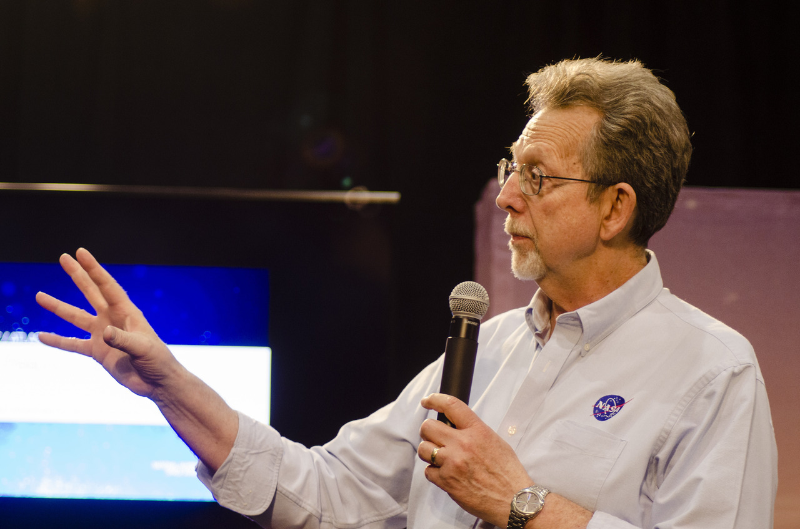
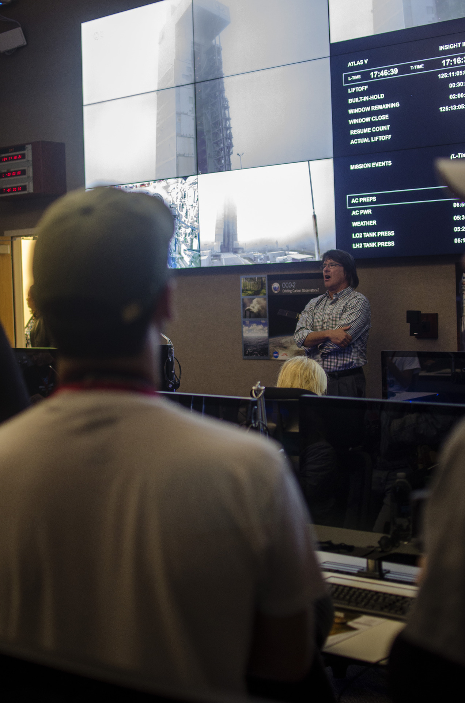
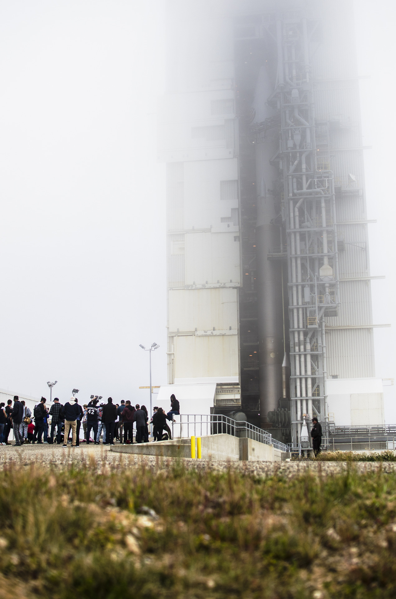
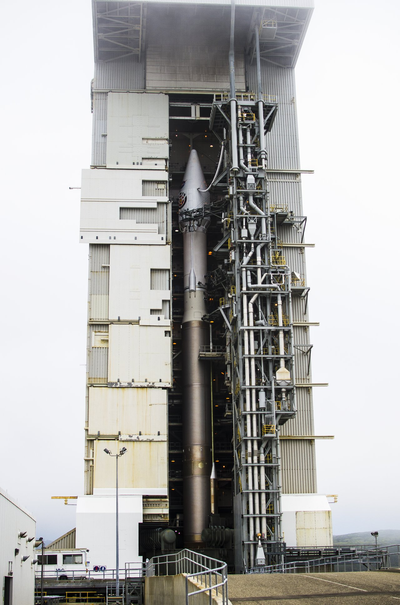

Three Days at the Pad
Before the General Assembly Hall, there was a press badge at Vandenberg Air Force Base — three days on the media tour for the launch of InSight, the first interplanetary mission to leave the West Coast. What follows is the release as it ran, wrapped around the days that produced these frames.

Five years into the studio’s life, Propagation House — in the form of one photographer with a press badge and a camera — was on the media tour that ran the length of the InSight launch. Three days of briefings, pad tours, and the particular hush of a launch site the night before it stops being a launch site. The photographs in this entry are from that tour, and the text below is NASA’s release, kept as it ran, because the facts of that morning don’t need help. What the release leaves out is the texture: the fog that swallowed the Atlas V whole the morning before launch, the press room’s screens running the countdown, the plume at 4:05 a.m. turning night into a color nobody in the room had seen before.
The media tour
A launch media tour is three days of being handed the machine one piece at a time. Day one was the press site — briefings in a room where every screen carried the mission’s numbers, and the walkways between buildings felt like the set of the space program a kid grows up on. Day two went out to the pad itself: Atlas V 401, stacked and silent in morning fog so heavy the vehicle kept disappearing and reappearing like a developing print. That’s the frame below — the rocket you can barely see is the one that made the front pages. Day three was the payoff, and it started at an hour that shouldn’t exist: alarms at 2, in position well before 4, and then the whole sky doing the thing no photograph quite holds.

What stays with the studio isn’t only the launch. It’s how much of the tour was people explaining their life’s work in plain sentences — engineers walking a group of strangers through hardware they’d spent years on, the countdown team narrating the morning like a recipe they’d cooked a hundred times. The release below calls it “years of work by a whole host of people.” Standing there, you could see the years on every face. The instinct at work that week is the same one the studio runs on now: get close to the people making the thing, and photograph the moment the thing becomes real.
The launch, as NASA released it
NASA’s Interior Exploration using Seismic Investigations, Geodesy and Heat Transport (InSight) spacecraft is on its way to Mars. InSight launched on a United Launch Alliance (ULA) Atlas V 401 rocket at 4:05 a.m. PDT (7:05 a.m. EDT) May 5, from Space Launch Complex-3 at Vandenberg Air Force Base in California.
NASA Administrator Jim Bridenstine spoke to the mission team at Vandenberg by phone. “This has been years of work by a whole host of people, for a very long time, including JPL, and of course the launch crew at Vandenberg,” Bridenstine said. “I want to give a special thanks to ULA and congratulate them on 128 total successful launches in a row, 78 specifically for the Atlas V. I want to thank our international partners, CNES and DLR, for their hard work.”
“It’s been an incredible day,” said Tim Dunn, NASA Launch Director for InSight. “It was a smooth countdown. The mighty Atlas rocket performed very well.”

Following two separate engine burns of the ULA Centaur upper stage, NASA’s InSight spacecraft separated from the Centaur to fly freely for the first time about 1.5 hours after liftoff. The spacecraft now is on its six-month, 300-million-mile voyage to the Red Planet. InSight will land on Mars on Nov. 26, 2018.
InSight is the first interplanetary mission to launch from the West Coast, and will be the first mission to look deep beneath the Martian surface. It will study the planet’s interior by measuring its heat output and listening for marsquakes. InSight will use the seismic waves generated by marsquakes to develop a map of the planet’s deep interior. The resulting insight into Mars’ formation will provide a better understanding of how other rocky planets, including Earth, were created.
The InSight lander is equipped with two science instruments that will conduct the first “check-up” of Mars, measuring its “pulse,” or internal activity; its temperature and its “reflexes,” or the way the planet wobbles when it is pulled by the Sun and its moons.
The science payload comprises two instruments: the Seismic Experiment for Interior Structure (SEIS), provided by the French Space Agency, with the participation of the Institut de Physique du Globe de Paris (IPGP), the Swiss Federal Institute of Technology, the Max Planck Institute for Solar System Research, Imperial College and the Jet Propulsion Laboratory. The second instrument, the Heat Flow and Physical Properties Package (HP3), is provided by the German Space Agency. Also, the Rotation and Interior Structure Experiment (RISE), led by JPL, will use the spacecraft communication system to provide precise measurements of planetary rotation.
Hitching a ride with InSight was NASA’s technology experiment, Mars Cube One (MarCO), a separate mission of its own, also headed to Mars. The two mini-spacecraft, called CubeSats, launched one at a time from dispensers mounted on the aft bulkhead carrier of the Centaur second stage. They were designed and built by NASA’s Jet Propulsion Laboratory in Pasadena, California, and are the first test of CubeSat technology in deep space. Their purpose is to test new communications and navigation capabilities for future missions, and may provide real-time communication relay to cover the entry, descent and landing of InSight on Mars.
“This is a big day. We’re going back to Mars; we did it from the West Coast, which is a first ever,” Bridenstine said. “And of course, the launch of our CubeSats into deep space. This is an extraordinary mission with a whole host of firsts.”
InSight’s lander will spend two years investigating the deep interior of Mars. For more information visit the InSight mission page.
Why it’s in this journal

The studio keeps this entry for a simpler reason than any analogy. Before it ever built a world, it spent years going to the places where things actually happen — a launch pad, a newsroom, a court, a stage — and the work has always been about carrying what happened there back out to people who weren’t in the room. That’s the whole job, whether the room is a press site in morning fog or a virtual hall built for a climate conference: take the thing that matters, and make it something anyone can walk into. InSight went on to land on Mars that November and listen for marsquakes for four years, outlasting its planned mission twice over. The frames are kept, the badge is kept, and so is the habit of standing close enough to feel it.